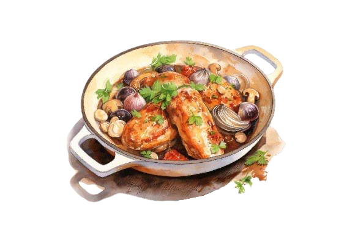

Coq au Vin Recipe
Chicken braised with mushrooms and onions.
Ingredients
For the Dish:
- 1.5 kg (3.5 lbs) chicken, cut into pieces (legs, thighs, and breasts)
- 200g (7 oz) bacon, diced
- 2 tablespoons olive oil
- 2 tablespoons unsalted butter
- 2 garlic cloves, minced
- 2 cups red wine (preferably Burgundy or Pinot Noir)
- 1 cup chicken stock
- 2 tablespoons tomato paste
- 1 onion, finely chopped
- 2 carrots, sliced
- 200g (7 oz) button mushrooms, halved
- 3-4 sprigs of fresh thyme
- 1 bay leaf
- 1 tablespoon flour
- Salt and freshly ground black pepper, to taste
For Garnish:
- Fresh parsley, chopped
Preparation Time
- Prep time: 20 minutes
- Cook time: 1 hour 30 minutes
- Total time: 1 hour 50 minutes
Instructions
- Prepare the Chicken and Bacon:
- Pat the chicken pieces dry with paper towels. Season with salt and pepper.
- In a large Dutch oven or heavy pot, heat the olive oil over medium heat. Cook the bacon until crisp, then remove and set aside, leaving the fat in the pot.
- Brown the Chicken:
- Add the chicken pieces to the pot and sear them in batches until golden brown on all sides. Remove and set aside.
- Sauté the Aromatics and Vegetables:
- In the same pot, melt the butter. Add the onion, carrots, and garlic, and sauté until softened (about 5 minutes).
- Deglaze the Pot:
- Sprinkle the flour over the vegetables and stir for 1 minute. Slowly pour in the wine, scraping the bottom of the pot to deglaze.
- Simmer the Stew:
- Return the chicken and bacon to the pot. Add the chicken stock, tomato paste, bay leaf, and thyme. Bring to a simmer. Cover and cook on low heat for about 1 hour, stirring occasionally.
- Add the Mushrooms:
- In the last 20 minutes of cooking, add the mushrooms to the pot. Let them cook until tender and the sauce has thickened.
- Adjust Seasoning:
- Taste the sauce and adjust the seasoning with additional salt and pepper if needed.
- Serve:
- Remove the bay leaf and thyme sprigs before serving. Garnish with chopped parsley and serve the Coq au Vin hot with crusty bread, mashed potatoes, or buttered noodles.
Enjoy this classic French dish with its rich, wine-infused flavors!